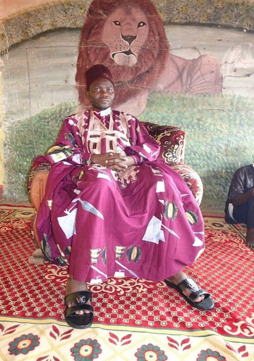
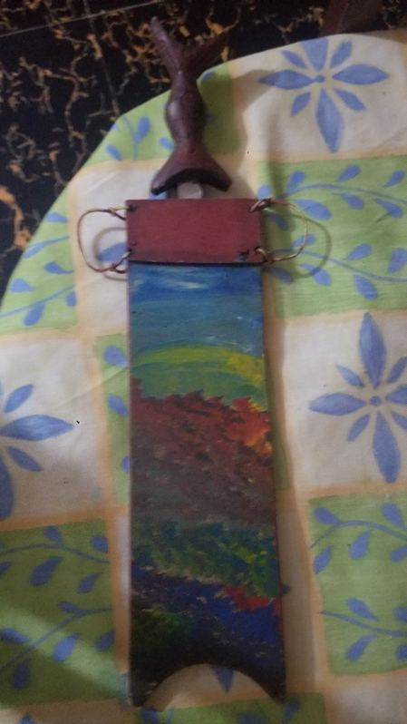
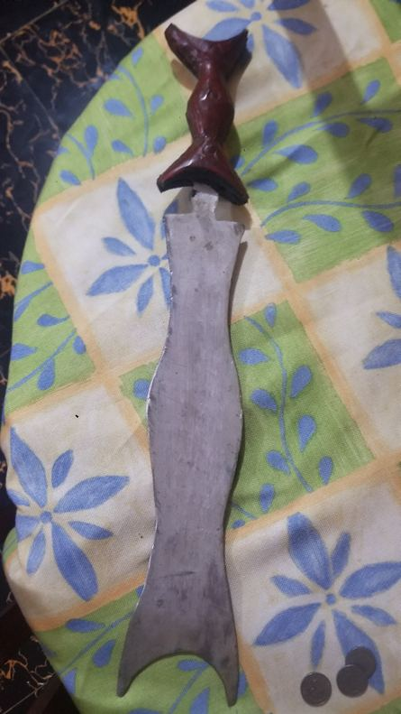
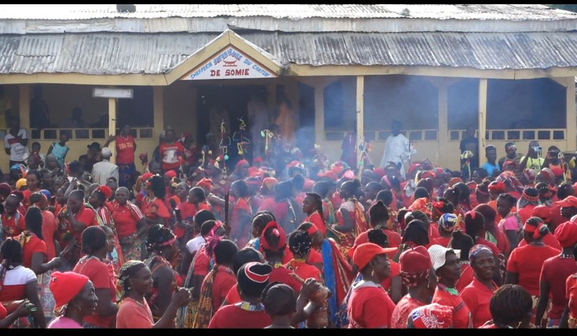
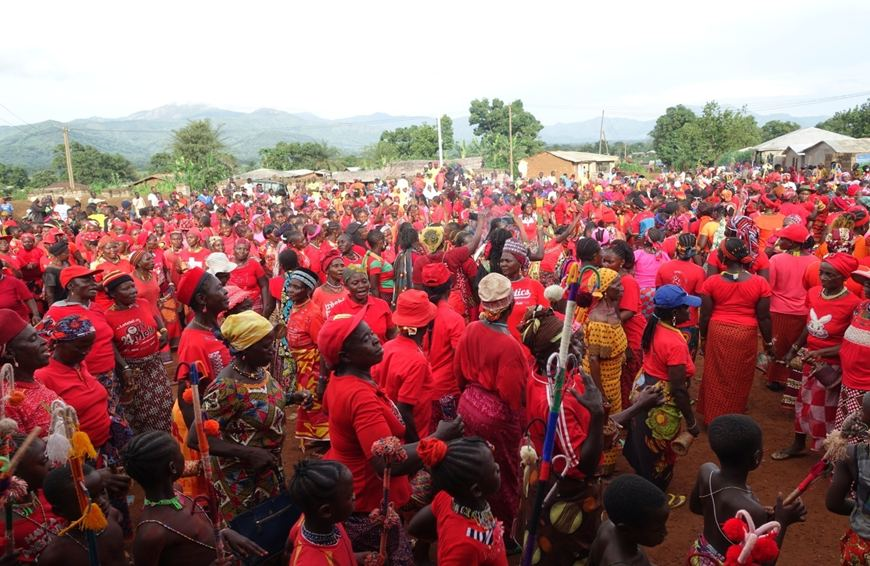
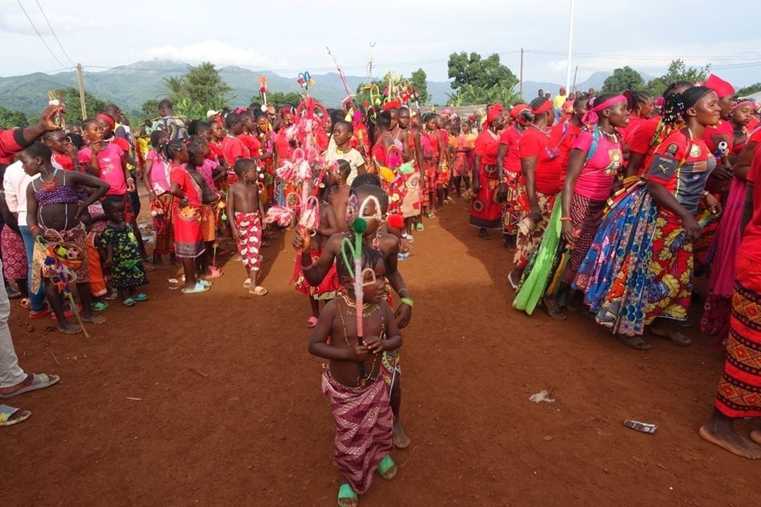
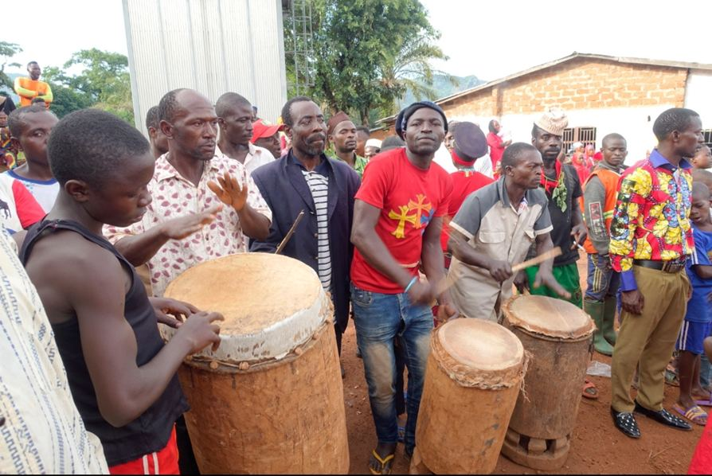
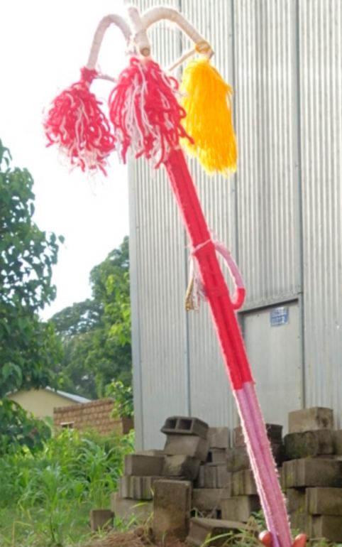

Ni mythe de la création, ni culte des ancêtres, ni panthéon d'esprits mineurs : la religion mambila frappe d'abord par ses absences. Ce vide apparent est comblé par deux notions centrales — Càŋ, le créateur, et sua, à la fois serment, mascarade et force agissante.
Quiconque connaît, même superficiellement, la littérature ethnographique sur le Cameroun occidental ou le Nigéria oriental est frappé, chez les Mambila, par une série d'absences presque complètes : pas de tradition mythologique, pas de culte des ancêtres, pas de culte des crânes ordinaires, pas d'esprits mineurs conçus comme des « réfractions » d'une divinité suprême entretenant une relation de réciprocité avec les vivants. Aucun mythe de la création, aucune explication mythique de l'ordre cosmologique n'a pu être recueillie — un contraste frappant avec plusieurs voisins des Mambila, notamment les Wuli du village de Lus, chez qui de tels mythes ont bien été documentés.
Cette absence est d'autant plus étonnante que les Mambila sont géographiquement proches des royaumes des Grassfields et du Cameroun occidental, accessibles par l'ancienne « route de la cola ». Rien, dans les changements historiques traversés par la région — contact colonial, conversion aux religions du monde — ne suffit à expliquer ce vide : les Tikar voisins, pourtant bien plus exposés aux mêmes influences coloniales, conservent des institutions et croyances sans équivalent mambila. Les raisons de cette différence semblent donc antérieures à l'arrivée des Fulɓe comme des colonisateurs.
S'il n'y a ni ancêtres, ni esprits, ni mythes : que reste-t-il ? Deux mots concentrent l'essentiel : Chang (Càŋ), pour Dieu et l'esprit personnel, et suàgà (sua), pour un ensemble de serments-rituels apparentés ainsi que pour les mascarades, aussi bien masculines que féminines.
Toute maladie est en principe attribuée soit à Càŋ, soit aux humains — c'est-à-dire aux sorciers. Attribuée à Càŋ, elle est dite « naturelle » : nulle enquête n'est nécessaire, il faut l'accepter et la traiter, quand bien même son étiologie paraît étrange — la lèpre, par exemple, causée en marchant dans la bavè (bave) du serpent cɔ, dont la seule vue entraînerait la mort.
Une maladie n'est réputée « naturelle » que tant qu'elle ne devient ni sérieuse ni persistante ; dans ce cas, on consulte la divination pour déterminer la conduite à tenir. Fait notable : cette étiologie ne fait jamais référence aux ancêtres ni à un quelconque esprit ou « réfraction » de Càŋ — les esprits sont absents de la cosmologie mambila, et les ancêtres n'y jouent qu'un rôle mineur.
Abattage rituel d'un poulet et invocation, sans jamais invoquer Càŋ ni sua — leur odeur seule est censée chasser ou tuer le sorcier agresseur.
Déclaration publique (ta nduan) avertissant, sans nommer personne, que la sorcellerie détectée se retournera contre son auteur si elle ne cesse pas.
Après identification, le sorcier peut être accusé en audience publique, scellée par un serment de sua devant le palais du chef.
Le mot lóp désigne à la fois la relation matrilatérale et la sorcellerie elle-même — car c'est par cette voie qu'elle se transmet. Si une mère a, en secret, pratiqué le cannibalisme des sorciers durant sa grossesse, ses enfants seront eux-mêmes sorciers ; à défaut, la sorcellerie héritée reste passive, se manifestant seulement par le don des « yeux ouverts » (njulu lóŋ) permettant de détecter d'autres sorciers — un don qu'on hésite à revendiquer publiquement, tant seul un sorcier peut en reconnaître un autre.
Les confessions spontanées de sorcellerie active restent rares : un cas documenté concerne une femme, mourante, qui confessa avoir tué plusieurs enfants et s'être transformée en vent pour arracher le toit du palais. Un autre cas, plus ambigu, vit un oncle accusé implicitement par une demande d'argent en réponse à une accusation portée par son propre frère — le tribunal civil de Banyo, saisi de l'affaire après la mort de l'enfant, prononça une peine de dix mois de prison assortie d'une lourde menace en cas de récidive.
Avant son interdiction par les autorités coloniales, l'épreuve de li offrait une réponse radicale à une accusation de sorcellerie : boire une décoction d'écorce de l'arbre li. Vomir et survivre prouvait l'innocence ; mourir, la culpabilité. Son abolition a renforcé, selon Zeitlyn, l'importance locale du serment sua, devenu la seule alternative disponible — le chef de Somié qualifiait lui-même la procédure judiciaire moderne et l'emprisonnement des sorciers condamnés de « version contemporaine de l'épreuve de li ».
Faute de confessions fréquentes, c'est la divination qui révèle la sorcellerie. Le Ŋgam dù, pratiqué avec des araignées ou des crabes, en constitue la forme la plus importante — seule preuve divinatoire recevable pour faire condamner un sorcier, au point que les devins peuvent être appelés à témoigner devant le tribunal civil de Banyo. La divination sert aussi à choisir un nouveau chef, une nouvelle épouse, ou le moment favorable pour entreprendre un voyage. Son origine reste, pour les informateurs, simplement rattachée à Càŋ en tant que créateur de toutes choses — sans relation privilégiée avec lui.
Càŋ est le créateur du monde et de tout ce qu'il contient — le verbe généralement traduit par « créer », meè, signifie littéralement « construire une maison ». Càŋ décide de ce qui doit arriver, sans que les humains puissent s'y soustraire : à l'annonce d'une mort, la réponse la plus courante reste Càŋ né ten (« Càŋ exister au présent »). C'est ce même mot qu'ont adopté les missionnaires chrétiens et le clergé catholique pour traduire « Dieu ».
Càŋ se comprend aussi comme esprit personnel, dans l'expression Càŋ mò (« mon Càŋ »), proche de la notion chrétienne d'esprit. À la mort d'une personne, son Càŋ quitte le corps et est chassé de la maison vers la brousse, où réside Càŋ tandalu — pour certains, l'esprit de tous les défunts ; pour d'autres, seulement celui des sorciers et faiseurs de mal. L'idée d'un au-delà organisé reste peu développée, cohérente avec le peu d'importance accordé aux ancêtres.
Lorsqu'on n'emploie pas sua comme concept unitaire, deux pôles se dessinent : les cérémonies aux masques et la famille des serments. Les Mambila insistent : il ne s'agit pas d'une simple homonymie mais d'une véritable unité linguistique et conceptuelle — le « pouvoir » d'un serment se trouve en partie renforcé par les cérémonies aux masques, sans que l'un ou l'autre pôle soit premier ou dérivé. Interrogés explicitement sur cette nature « plurielle mais une » de sua, les informateurs de Zeitlyn répondaient invariablement : « c'est juste un. Il y a plusieurs sua, mais ils sont tous fondamentalement la même chose » — une formule que Zeitlyn rapproche, avec prudence, de la doctrine chrétienne de la Trinité, sans que les Mambila ordonnés qu'il a interrogés n'aient voulu pousser eux-mêmes la comparaison.
La preuve la plus frappante de cette unité tient à un serment inter-villages, célébré deux fois en 1985 pour sceller la paix entre Somié et Sonkolong. À la différence d'un serment ordinaire prêté au palais dans le cadre d'une audience, celui-ci mobilisait les objets rituels de la mascarade masculine elle-même : deux hommes soufflant dans des sifflets de sua, un troisième utilisant un déformateur de voix, un quatrième agitant un bouquet de clochettes et de gongs jumelés. Lorsque ce cortège s'avança depuis le palais vers la place, on annonça à Zeitlyn : « sua arrive » — exactement comme si la mascarade elle-même s'apprêtait à apparaître.
Le sua des hommes favorise leur fertilité et leur solidarité face aux femmes ; le sua des femmes, dansé lors de rites bisannuels, tourne en dérision les hommes et l'acte sexuel, exprimant à son tour la solidarité féminine. En principe annuel, le rite complet n'est en réalité pas exécuté chaque année ; les années creuses, on se contente d'un rite abrégé, « enterrer le village ».
Prêté chez soi, à la suite d'une divination, pour protéger le ménage : quiconque entrera ensuite avec de mauvaises intentions s'expose au pouvoir du serment.
Déclaration publique, faite en se frappant le ventre, invoquant sua contre un voleur ou un empoisonneur potentiel — la forme la moins irréversible des serments.
Conclut l'audience d'adultère : le mari et le coupable s'agenouillent face à l'est pendant qu'un Notable frotte le nduŋgu sua (bâton triangulaire d'origine konja) sur leurs paumes tendues.
Le village entier se rassemble en cercle ; un porte-parole invoque à voix haute que le bien entre au village et que le mal reparte en brousse — la foule répond en pointant l'index vers le sol : « il verra sua ».
Le serment prêté au palais du chef reste la forme la plus importante et la plus fréquente de sua — celle-là même que Meek, dès 1931, appelait déjà Ngub Sho chez les Mambila du Nigéria. Les allocutions qui l'accompagnent affirment l'innocence de celui qui parle et menacent explicitement de mort quiconque fait le mal. Une analogie centrale s'y répète : celle du poussin sacrifié et de la personne malveillante, celle du couteau et du pouvoir de sua lui-même.
Une fois le serment prononcé, le sujet est clos sans appel immédiat : l'assistance se disperse ou passe à l'affaire suivante, et toute tentative de prolonger la discussion est activement découragée. « Il est trop tard pour dire quoi que ce soit de plus. L'affaire n'est plus entre nos mains, elle appartient à sua » — un principe que Zeitlyn rapproche des théories des actes de langage d'Austin et Searle sans les y réduire complètement : la force illocutoire du serment est bien réelle (celui qui ment croit s'exposer à la mort), mais son efficacité sociale immédiate tient surtout à sa capacité à mettre fin, concrètement et sans retour, à la discussion publique.
« Suàgà, c'est une chose vénérable. Ce n'est pas quelque chose de nouveau qui est là. C'est vieux, vieux. » — Refrain d'un serment sua enregistré à la Chefferie de Somié
Le schéma ci-dessous reprend, sous une forme simplifiée, la classification établie par David Zeitlyn avec ses collaborateurs mambila Mbe Charles et Mial Nicodème : sous le mot unique sua, deux grandes familles de pratiques, elles-mêmes subdivisées.
Schéma redessiné d'après Trois Études sur les Mambila de Somié (Zeitlyn, Mbe, Mial). Certaines branches (comme « l'échant ») restent peu documentées dans les sources publiées ; elles figurent ici pour fidélité au schéma original plutôt que pour un détail que ce site pourrait développer davantage à ce stade.
Loin d'être un isolat, sua s'inscrit dans un réseau régional de pratiques apparentées, comme en témoignent les vocables recueillis chez les voisins immédiats des Mambila.
| Peuple | Mascarade | Serment |
|---|---|---|
| Mambila | sua | sua |
| Konja | sɔp | səər |
| Tikar | swɔa | — |
| Yamba | sɔ / nwe(?) | sɔta / sɔtap |
| Wuli | — | sɔ (village de Lus) |
La proximité phonétique de ces termes, relevée par David Zeitlyn à partir de ses propres enquêtes et de celles de Baeke chez les Wuli, suggère l'existence d'un ancien système partagé de signification religieuse et rituelle à l'échelle régionale. Zeitlyn est cependant explicite sur les limites de cette hypothèse : seule une recherche complémentaire, menée directement chez chacun de ces peuples, permettrait d'établir si l'on a affaire à davantage qu'une simple ressemblance linguistique de surface. Le tableau sert avant tout, dit-il, à rappeler que les Mambila n'existent pas dans un vide régional.
Le compte rendu le plus détaillé de la thèse concerne l'initiation de l'ethnographe lui-même à la société sua des hommes, les 29 et 30 mai 1988 — la seule occasion où il y a pris part comme initiand plutôt que comme observateur extérieur.
La cérémonie commence par la réparation de l'enclos rituel (jere), construit avec du bois de quatre essences différentes qu'il refuse de nommer dans sa thèse, par respect du secret exigé par ses propres initiateurs. Puis un groupe restreint part en forêt cueillir les plantes rituelles : chaque plante est désignée aux initiands non pas à la lance, mais à la flèche — un détail que rien ne peut remplacer, la recherche s'étant même retardée le temps de retrouver une flèche disponible. Durant tout le trajet, sifflets et cris avertissent les femmes de s'écarter, car elles ne doivent pas voir passer le cortège.
Le costume de la mascarade, sorti en urgence du palais par une fenêtre, est aspergé d'eau et frotté pour l'assouplir ; il est interdit (julu) de le toucher si l'on a eu des rapports sexuels la nuit précédente. Une fois le travail sur l'enclos achevé — geste qui, par le contact avec les femmes qu'il implique indirectement, est lui-même julu — les participants sont purifiés à la cendre de pipe, appliquée trois fois du doigt sur la langue, les reins et le front, ce qui leur permet de reprendre contact normal avec leurs épouses.
Zeitlyn précise n'avoir pas été le seul néophyte cette année-là, et souligne que la possibilité de comparer les récits recueillis avant et après son initiation constitue une garantie, même imparfaite, que le rite n'a été ni modifié ni écourté du fait de sa présence.
À la mort d'une personne âgée, les membres de son sexe peuvent danser le sua toute la nuit devant sa maison — sans critère clair déterminant qui y a droit. Ceux de l'autre sexe restent cloîtrés dans les maisons voisines tout en participant à la veillée. Zeitlyn n'a jamais vu de masque sorti à cette occasion durant son terrain, bien qu'on lui ait assuré que la mascarade masculine pourrait en principe y apparaître ; chants et danses sont identiques à ceux des rites principaux, à l'exception, précisément, de la mascarade elle-même.

La cérémonie bisannuelle du sua féminin est dirigée par cinq femmes titrées, les Marenjo, dont la doyenne au moment du terrain était Sapkə, sœur aînée du chef. Trois d'entre elles sont filles de chefs successifs (Menandi, Kolaka), les deux autres sœurs des chefs de hameau de Gumbe et Njerup — les deux mêmes hommes qui « nomment » le chef du village. Les Marenjo se répartissent en deux moitiés cérémonielles, Bàgà et Mvop, auxquelles chaque mère affilie ses filles dès l'enfance, généralement en alternance selon l'ordre de naissance.
Le déroulement s'étale sur trois Bam successifs (le jour sacré de la semaine traditionnelle de dix jours). Le premier — « l'enterrement du village » — a lieu chaque année, qu'il y ait ou non danse complète cette année-là. Le second, « le creusement de sua », comprend l'intrusion des femmes dans le palais, où le chef se réfugie à leur approche, puis l'initiation des nouvelles participantes par un repas rituel de poisson tetaga et de chèvre.
Les jours qui précèdent la danse principale sont marqués par un comportement rituel d'inversion que les sources décrivent sans détour : cris de mots sexuels normalement proscrits, scènes de viol mimé où une femme est projetée au sol et simule un rapport avec son agresseuse — elle-même parfois « violée » à son tour par d'autres participantes dans un tourbillon bref — ports de faux pénis d'argile brièvement montrés aux hommes, chants sur le thème des testicules volumineux jugés honteux. Les hommes qui assistent accidentellement à ces scènes en éprouvent une gêne visible ; certains se recroquevillent littéralement de honte. Un feu est allumé au centre de la place et entretenu jusqu'à la fin de la danse : s'en approcher, pour un homme, expose selon la croyance locale à l'impuissance.
Zeitlyn interprète cette inversion carnavalesque comme l'exact miroir du sua masculin : là où celui-ci affirme la solidarité des hommes et leur fertilité face aux femmes, le sua féminin retourne le rapport de force le temps du rite, avant que l'ordre social ordinaire ne reprenne son cours. Il relève un détail qui nuance le récit habituel de la domination masculine sur la parole religieuse : lors d'un serment sua karup prêté pour protéger la maison d'une femme seule, c'est elle qui, restée derrière sa porte fermée, dictait à voix basse à son frère classificatoire — posté dehors, le bouquet rituel à la main — les mots exacts qu'il devait prononcer en son nom.
Les femmes dansent le sua muni d'un objet particulier, le Bou Sua (littéralement « la machette du sua ») : une lame façonnée par un forgeron mambila, montée sur un manche sculpté et glissée dans un étui de bois peint à la main de motifs paysagers. Sa forme singulière — la lame en escalier, le manche zoomorphe — lui vaut ce nom. L'objet témoigne d'une continuité artisanale (forge, sculpture sur bois, peinture) que les mêmes sources ethnographiques décrivaient, dans les années 1980, comme en net déclin.


Le système religieux contribue, de fait, à maintenir le pouvoir des hommes sur les femmes : celles-ci ne peuvent ni accuser un sorcier sans la complicité d'un homme, ni prêter elles-mêmes le serment le plus puissant pour se disculper d'une accusation de sorcellerie. L'auteur souligne toutefois que ni la divination ni sua n'ont été conçus dans cette intention — l'effet, dit-il, ne doit pas être confondu avec la cause. Le cas du serment dicté en secret, ci-dessus, montre en outre que le compte-rendu formel de l'exclusion féminine masque une pratique plus nuancée que ne le suggère la règle énoncée.
Ces photographies, prises à Somié en mai 2022, documentent une célébration récente du sua féminin devant le palais du chef. Elles ne se substituent pas au travail de terrain de Zeitlyn dans les années 1980, mais montrent que le rite continue de se transmettre : le cercle des danseuses autour du feu, la présence massive de la couleur rouge, la participation des plus jeunes filles initiées cette année-là.





La nuit qui suit la danse, les femmes éteignent le feu allumé pour la cérémonie et vont verser les cendres dans le ruisseau proche du village — un geste qui, selon le témoignage recueilli par Cyprien, doit favoriser la production de poisson, et dont les cendres elles-mêmes ne doivent toucher aucun homme du village.
Sur la couleur rouge, omniprésente dans ces images : elle remplace un usage plus ancien, la sève d'acajou dont les femmes et jeunes filles s'enduisaient autrefois la peau pour la célébration, aujourd'hui délaissée pour des vêtements rouges achetés au marché hebdomadaire. Les Mambila associent cette couleur à la vivacité, à la bravoure et à la beauté — elle jouait un rôle comparable à la fête des récoltes de mi-août, moment traditionnel où les jeunes gens cherchaient leur promis·e.
Guerres foulbé, migrations, colonisation et partage frontalier : plongez dans l'histoire du peuple, racontée en partie dans ses propres mots.
Histoire →